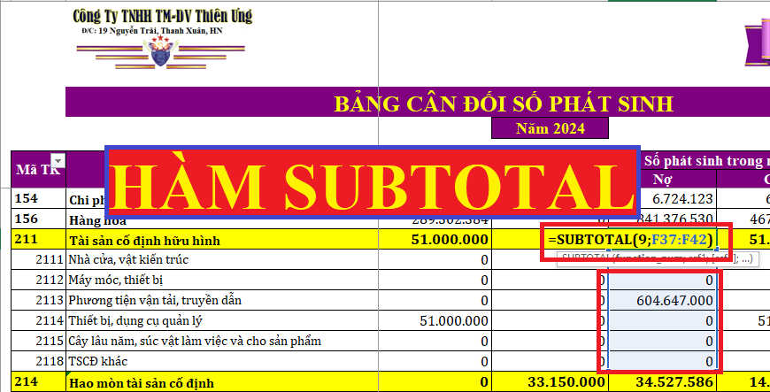

Hướng dẫn cách sử dụng hàm SUBTOTAL trong Excel vào công việc kế toán thực tế như: Tính tổng phát sinh trong kỳ, tính tổng tiền tồn cuối ngày, tính tổng cho từng tài khoản kế toán trên Mẫu sổ sách kế toán trên Excel
1. Công dụng của hàm SUBTOTAL trong Excel kế toán:
- Tính tổng dãy ô có điều kiện như:
Tính tổng phát sinh trong kỳ.
Tính tổng cho từng tài khoản cấp 1.
Tính tổng tiền tồn cuối ngày.
2. Tác dụng của hàm SUBTOTAL trong Excel:
- Hàm Subtotal là hàm tính toán cho một nhóm con trong một danh sách hoặc bảng dữ liệu tuỳ theo phép tính mà bạn chọn lựa trong đối số thứ nhất.
- Đối số thứ nhất của hàm SUBTOTAL bắt buộc bạn phải nhớ con số đại diện cho phép tính cần thực hiện trên tập số liệu. Đối số đó được xác định hàm thực sự nào sẽ được sử dụng khi tính toán trong danh sách bên dưới.

Ví dụ: Nếu đối số là 1 thì hàm SUBTOTAL hoạt động giống nhưng hàm AVERAGE, nếu đối số thứ nhất là 9 thì hàm hàm SUBTOTAL hoạt động giống nhưng hàm SUM.
Chú ý: Tuy có nhiều đối số là từ 1 – 11 nhưng trong kế toán chúng ta thường sử dụng đối số 9 và thường sử dụng trong việc tính tổng cho từng tài khoản, tính tổng phát sinh bên Nợ, Có, tỉnh tổng số tiền cuối ngày
- Cú pháp hàm: = SUBTOTAL(9; dãy ô cần tính tổng)
( Số 9 là cú pháp mặc định của hàm cho việc tính tổng)
Ví Dụ:
- Tổng phát sinh bên Nợ: = Subtotal (9;H13:H190)
- Tổng phát sinh bên Có: = Subtotal(9;H13:H190)
- Cột tồn tiền cuối ngày dùng hàm Subtotal:
Cú pháp hàm: = $J$9+Subtotal(9,H$11:H11)-Subtotal(9,I$11:I11)
Ghi chú:
- Nếu có hàm subtotal khác lồng đặt tại các đối số ref1, ref2,… thì các hàm lồng này sẽ bị bỏ qua không được tính nhằm tránh trường hợp tính toán 2 lần.
- Đối số function_num nếu từ 1 đến 11 thì hàm SUBTOTAL tính toán bao gồm cả các giá trị ẩn trong tập số liệu (hàng ẩn). Đối số function_num nếu từ 101 đến 111 thì hàm SUBTOTAL chỉ tính toán cho các giá trị không ẩn trong tập số liệu (bỏ qua các giá trị ẩn).
- Hàm SUBTOTAL sẽ bỏ qua không tính toán tất cả các hàng bị ẩn bởi lệnh Filter (Auto Filter) không phụ thuộc vào đối số function_num được dùng.
- Hàm SUBTOTAL được thiết kế để tính toán cho các cột số liệu theo chiều dọc, nó không được thiết kế để tính theo chiều ngang.
- Hàm này chỉ tính toán cho dữ liệu 2-D do vậy nếu dữ liệu tham chiếu dạng 3-D (Ví dụ về tham chiếu 3-D: =SUM(Sheet2:Sheet13!B5) thì hàm SUBTOTAL báo lỗi #VALUE!. (Các loại tham chiếu xem bài sẽ đăng tiếp sau)
Chúc các bạn thành công!
Ngoài ra: Kế toán Diệu Tâm có thiết kế Mẫu sổ sách kế toán trên Excel áp dụng cho DN mà không cần dùng đến phần mềm kế toán. Tải về tại đây: Mẫu sổ sách kế toán trên Ecxel (Đây là 2 mẫu theo Thông tư 200 và 133)
Các bạn muốn hiểu rõ hơn nữa, hoặc các bạn muốn học cách hạch toán, hoàn thiện sổ sách, lập Báo cáo tài chính trên Excel mà ko cần dùng đến phần mềm kế toán có thể tham gia: Lớp học kế toán trên Excel thực hành thực tế
-------------------------------------------------